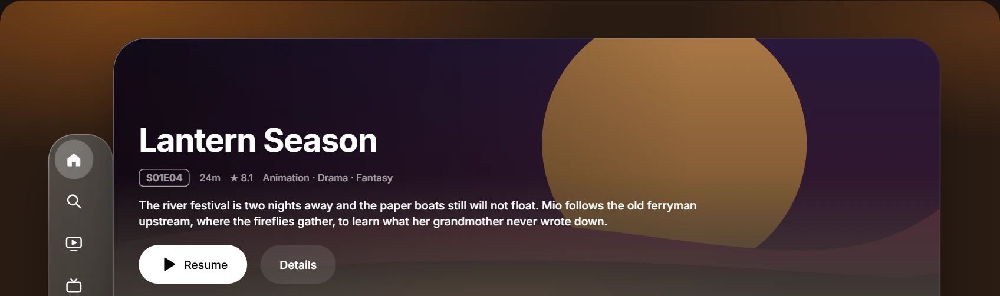
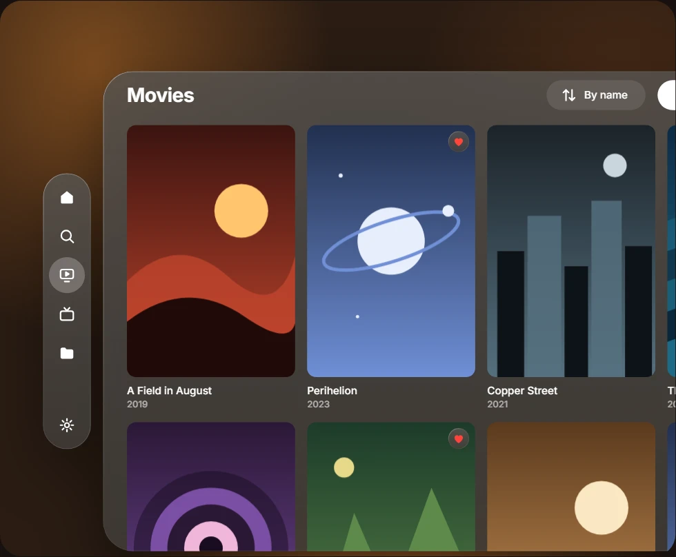
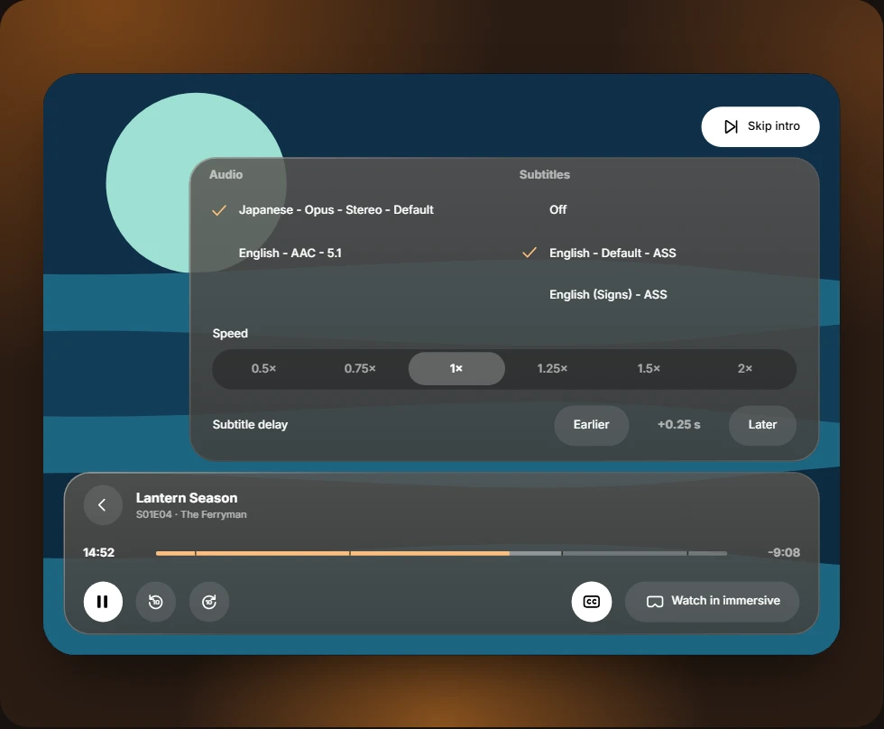
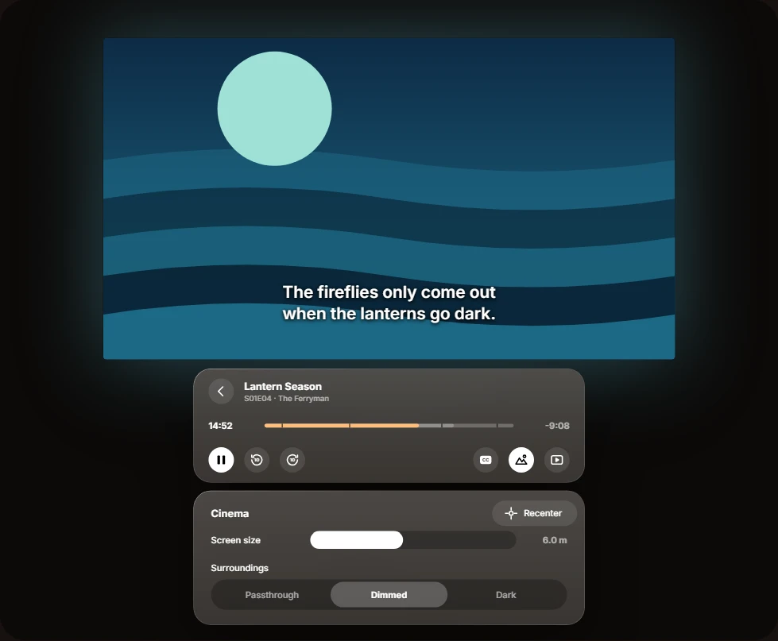

your library,
on a giant screen
A Jellyfin app for Meta Quest 3 and 3S. Browse in a window, then watch in an immersive cinema.
The APK sideloads with developer mode on.

01
Browse in a window
Your libraries sit in a window you can resize: continue watching, next up, latest additions, search, and filters for unplayed and favorites.
- Movies, shows, home videos, music videos, collections and playlists each get a tab.
- Sort by name, recently added or latest releases.
- Everything works with hands or controllers.

02
Every track, in reach
Switch audio and subtitles, change speed, nudge subtitle timing and skip intros without leaving the picture.
- Styled ASS subtitles are drawn by libass, animation included. SRT, WebVTT and TTML work too.
- Chapter marks on the seek bar, and preview thumbnails while you scrub.
- Direct play first, then a remux, then a transcode. HDR is passed through where the headset supports it.

03
A cinema to yourself
Go immersive and the video becomes a screen from 1 to 12 metres wide. Keep your room in passthrough, dim it, or turn it off.
- Moving between the window and the cinema doesn't restart what is playing.
- Side-by-side and top-and-bottom 3D plays in stereo.
- 180° and 360° videos surround you.

Build it yourself
To build Hotaru instead of downloading it, you need JDK 21, the Android SDK with sdk.dir set in local.properties, and a headset in developer mode.
Hotaru needs Horizon OS v69 or newer and a Jellyfin server on 12.0 or newer.
git clone https://github.com/Anthonyy232/Hotaru.git
cd Hotaru
./gradlew :app:quest:assembleDebug
adb install -r app/quest/build/outputs/apk/debug/quest-debug.apk